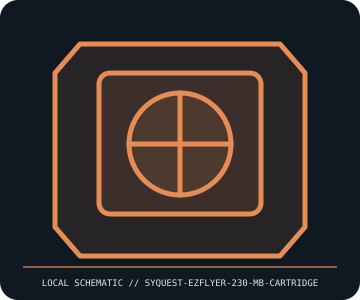

[ REMOVABLE MEDIA // MODEL-SPECIFIC RECORD ]
SyQuest EZFlyer 230 MB Cartridge
SyQuest EZFlyer 230 MB removable magnetic cartridge generation. This catalog entry distinguishes the removable medium from its drive/reader and calls out model-specific fit and format caveats.

IDENTIFICATION: Transcribe the entire model/part number, capacity, generation and revision from the label or packaging. Confirm the exact host-device manual before inserting or writing.
Format, capacity and compatibility
| Product / part ID | SyQuest EZFlyer 230 MB Cartridge |
|---|---|
| Generation / format | SyQuest EZFlyer 230 MB removable magnetic cartridge generation |
| Capacity and medium | 230 MB nominal formatted capacity, 3.5-inch class removable hard-disk cartridge. The entry is the cartridge medium only; IDE/SCSI/parallel-port drive units are separate products. |
| Compatibility | Requires an EZFlyer 230-capable drive. Period references report EZFlyer 230 drives are backward-compatible with EZ135 cartridges; do not assume older EZ135 drives can read/write EZFlyer 230 media. Interface, host driver, and filesystem are separate compatibility requirements. |
| Version and model caveat | EZFlyer is not the same product as SyQuest EZ135 or 44/88 MB cartridges. Capacity labels, cartridge generation, and drive model must agree; verify exact drive manual and cartridge markings. |
Handling and preservation
Keep cartridges in their case and away from dust, shock, magnetic fields, moisture, and extreme temperature. Never insert a cracked or contaminated shell. Image read-only with a tested drive and checksum all extracted data; avoid routine cycling of aging media.
- Preserve original packaging, label, acquisition notes and any write-protect state; photograph the media before use.
- Make at least two independent copies of valuable data, verify checksums, and periodically test a restore. A removable cartridge or card alone is not an archival strategy.
Model and version notes
EZFlyer is not the same product as SyQuest EZ135 or 44/88 MB cartridges. Capacity labels, cartridge generation, and drive model must agree; verify exact drive manual and cartridge markings.
Standards and product-family sources establish the generation; exact model manuals, labels, regional revisions, firmware, interface and host support determine actual interchangeability.
Sources and standards
- Internet Archive — SyQuest EZFlyer documentation searchPeriod manuals and installation material for interface-specific EZFlyer 230 drives.
- Museum of Obsolete Media — SyQuest EZ135 recordHistorical cross-generation context; distinguish EZ135 support from EZFlyer 230-specific drive compatibility.
Manufacturer and standards references are preferred; archival manuals or museum records are identified when products are discontinued. Capacity and compatibility claims are scoped to the specific SKU and generation named above.